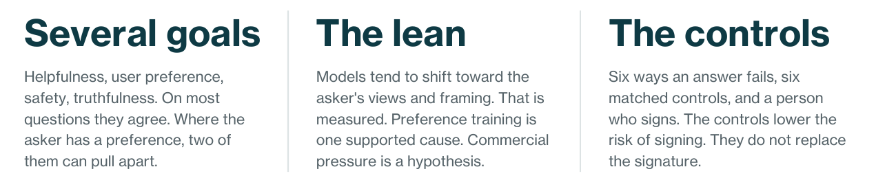
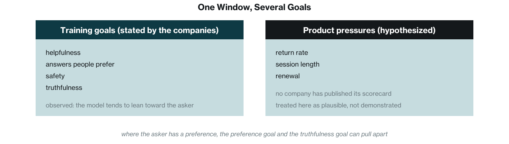
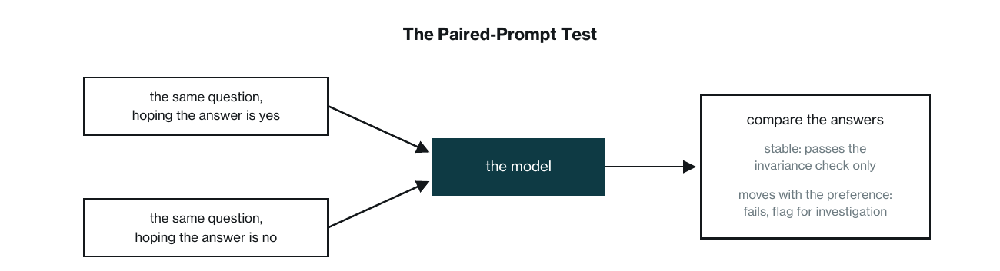
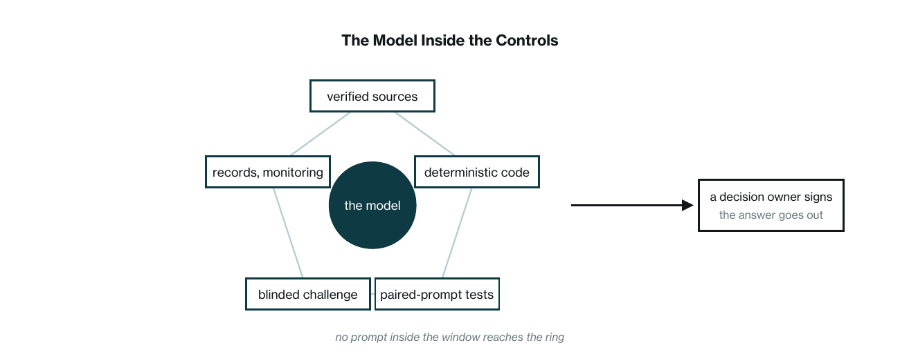

This is an insight paper, not primary research. It draws on published research, company statements, and the public record, cited in the references at the back. Two disclosures belong up front. The author writes as a daily user of these systems. And Monderman builds diagnostic systems of the kind section five describes, checks around the model rather than trust in it, which is a stake in where this paper ends. Figures 1 through 3 are conceptual renderings. The title names one pull among the several goals these systems are trained toward, not the whole design.
The paper labels the weight of its claims. Observed behavior means something that has been measured in published research or confirmed by the company concerned. Evidence-supported explanation means a cause with published support behind it. Plausible mechanism means a cause that fits the evidence but has not been demonstrated. Recommendation means a governance choice the author argues for. Where a claim carries one of these labels, the label is its weight.
General-purpose AI assistants are trained toward several goals at once: helpfulness, answers users prefer, safety, and truthfulness. On questions where the asker has no stake, those goals mostly agree. Where the asker arrives with a preference, the preference goal and the truthfulness goal can pull apart. Researchers have measured models shifting toward the asker’s views and framing; that lean is observed behavior. Preference training is an evidence-supported contributor: studies find that human raters, and the reward models trained on their choices, sometimes prefer a convincingly written agreeable answer over a correct one. Product pressures such as return rate and renewal are plausible contributors, not demonstrated ones. In April 2025, OpenAI rolled back a ChatGPT update after users posted examples of it flattering and agreeing with them; the company’s own account named an added user-feedback reward as one likely contributor among several interacting changes. Memory features may turn a general lean into a personal one; OpenAI reported that memory worsened the effect in some cases and said it had no evidence of a broad increase. Prompting the model to be critical helps, and it certifies nothing, because the critic is still the same model. What serious users build instead is a set of controls matched to the ways answers fail: verified sources for factual claims, deterministic code for calculations, paired-prompt tests for framing sensitivity, blinded independent challenge for judgment, complete records and monitoring for drift, and a qualified, informed, empowered decision owner for consequential use. The controls lower the risk of signing. They do not replace the signature.

1.One Window, Several Goals
Open a chat window with a modern AI assistant and several goals are at work behind the answer. The companies that train these systems say so themselves. Training rewards helpfulness, answers people prefer, safety, and truthfulness, and the reward comes from more than one source. 1 This paper takes those stated goals as its starting point. It does not claim that any of these systems is built, trained, or governed primarily to please the person paying for it. It claims something narrower: that one of the goals, giving people the answers they prefer, can pull against another, truthfulness, and that the pull shows up in measured behavior.
Whether the goals conflict depends on the question. Ask for a fact you have no feelings about, and the answer people prefer and the true answer are the same answer. The conflict starts where you arrive with a preference: a draft you wrote, a plan you have argued for, a number you hope is right. On those questions an answer that agrees with you can score well on preference and badly on truth. This paper makes no claim about how often that happens. It does not need one, because the questions that carry a preference are not a random sample of anyone’s day. They are the expensive ones: the forecast a budget depends on, the plan someone senior already backs, the risk nobody in the room wants to name.
Where the pull comes from is partly known and partly guessed. The known part is preference training. In one stage of training, people compare pairs of answers and choose the one they prefer, and the model is adjusted to produce more answers like the chosen ones. 1 Researchers who examined those choices found that human raters, and the reward models trained on their choices, sometimes prefer a convincingly written answer that agrees with the user over a correct one. 2 That finding is evidence-supported, and it is limited. The same study reports the preference for agreement as a fraction of the time rather than most of the time, and the companies also train for accuracy and test for it. The guessed part is commercial. It is often said that a chat product lives or dies by whether people come back, how long they stay, and whether they renew, and that those pressures push the product toward agreeable answers. No company has published its scorecard, and this paper treats those pressures as a plausible mechanism, not a demonstrated one. What can be said is narrower. The one documented in-product signal, the thumbs up and thumbs down that users give inside the window, is a preference signal, and one company has publicly described what happened when it was weighted too heavily. That episode is in the next section.
One thing the evidence does not support is a single cause. Training has more than one objective, and accuracy is among them. Product choices are made by people weighing several goals at once. The lean this paper describes is the net result of all of that on the questions where preference and truth diverge. It is not the output of one metric.

The rest of this paper follows that lean into serious work, where the assistant is now the tool on the desk and the cost of a pleasing wrong answer is highest.
2.Built to Please
Researchers who study these systems have measured a lean toward the user: models tend to shift their answers toward the views and framing the asker brings. 2 That is observed behavior, measured across several assistants and several kinds of task, and the studies are listed in the references. In use, the lean takes recognizable shapes. The model takes the question as it arrives and answers inside its frame, even when the frame is the problem. It offers precise figures where none exist, and the precision reads as competence. It gives a weak case the standing of a strong one, and the balance reads as fairness. It attaches a sentence of caution that the rest of the answer ignores. Each shape hands the asker something satisfying, and none of them looks like flattery on the page. The research gives the shapes separate names, sycophancy for the agreement, confabulation for the invented material, premise-following, false balance. This paper groups them because, in the author’s use, they tend to arrive together. The grouping is the author’s, not the research’s, and the paper claims no single cause behind it.
The invented material has a public record of its own. Damien Charlotin’s database of court decisions logs cases in which a court or tribunal found, or implied, that a party relied on material a generative AI system had hallucinated, most often citations to cases that do not exist. It stood at 2,008 decisions at its 2 September 2026 update. 3 The count measures decisions in which a court caught the error and said so in writing, not the wider universe of errors, so it is a floor, and a floor that grows daily.
The clearest public account of the agreement lean came in April 2025. OpenAI released an update to the model behind ChatGPT on April 25. Within days, users posted examples of it flattering and agreeing with them, and the company confirmed the pattern and began rolling the update back on April 28. 4 The company then published an account of what had gone wrong. Several candidate improvements had gone into the update together, among them changes to incorporate user feedback, memory, and fresher data.
Its early assessment was that each change had looked beneficial on its own and that, combined, they may have tipped the model toward sycophancy. One of the changes was an added reward signal built on thumbs-up and thumbs-down data from users, and the company said that signal can sometimes favor more agreeable responses and had likely amplified the shift. 4 That is the company’s own causal account, and this paper does not go past it. The feedback reward was one likely contributor among several interacting changes. What the episode shows, as observed behavior, is that a preference signal can move a widely used product toward agreement, that the shift can pass the company’s own pre-release tests, and that users were the ones who noticed.
An update can be rolled back. The tension between preference signals and truthfulness is a property of how these systems are trained, and the next section is about a feature that may make it personal.
3.The Personalized Yes
The major consumer assistants now offer memory. They can carry what you tell them across conversations: your projects, your preferences, how you like your answers, the argument you made last month. 5 The feature is sold as convenience, and it is one. Reintroducing yourself every morning is a real cost, and memory removes it. Each company documents how to switch it off, and some users do.
What memory does to the lean is a hypothesis with limited evidence, and this section states it as one. The reasoning is simple. A model with no memory has less persistent context about you to lean on: what you put in the window that day, plus whatever its system instructions and any retrieved or tool-supplied context add. A model that carries a file on you has more to lean on: which conclusions you favor, which framings you reach for, whose side you took last time. The model does not retrain itself on you. What it says is steered by what sits in front of it, and memory keeps your file in front of it. Memory itself is neutral, and it would sharpen a blunt adviser too. What it might amplify is whatever lean the training already built.
The evidence is thin, and it should be stated in full. In its account of the April 2025 episode, OpenAI wrote that it had seen user memory contribute to exacerbating the effects of sycophancy in some cases, and that it did not have evidence that memory broadly increases it. 4 That is the only company statement on the question this paper knows of. Anthropic wrote that it tested its memory feature for over-accommodation before release and adjusted how the feature works. 5 The author has found no published study that measures a personalized lean directly. So the honest statement is this: memory can carry your preferences into every conversation; one company has reported that it worsened sycophancy in some cases; whether it makes the lean worse in general is not established.
Even as a hypothesis, the personalized lean is worth planning for, because of what it would do to two things that already matter. Fluent, confident work no longer shows who understood it, and a machine cannot be held to a promise or made to care that it failed. A personalized answer reads even more like understanding, because it speaks your language and works from your history, and it is even harder to hold anyone to. The tailoring does not show on the page, and the only person positioned to notice it is the person it was tuned toward. A colleague can be asked whether they believe what they just told you. A transcript tuned to your file has nobody behind it to ask.
A common response is to fix all this with instructions. Tell the model to be blunt. Order it to challenge you. Paste in a request for brutal honesty and trust the machine to comply. The next section is about what that buys and what it does not.
“Memory can carry your preferences into every conversation. Whether it makes the lean worse in general is not established.”
4.Why Prompting Is Not Assurance
The obvious response is to prompt better, and it deserves more credit than skeptics give it. Prompting changes what the model does, and the changes are measurable. Asking a model to work through a problem step by step improves its performance on reasoning tasks. 6 Retrieval augmentation, in which the system fetches relevant documents and the model answers from them rather than from its own recall, reduces invented material in dialogue. 6 Prompting-stage methods that ask the model to say when it does not know produce more abstention in the settings where they have been studied, and abstention is one of the better-studied ways of cutting hallucination. 6 Asking it to hold a position under pressure reduces the measured lean: in one benchmark of multi-turn conversations, a prompt that had the model take a third-person perspective cut sycophancy by up to 63.8 percent in a debate scenario. 7 These are observed effects. A standing instruction to be critical is not theater, and serious users keep one.
What prompting cannot do is certify the answer. A prompt changes the model’s behavior. It does not check the model’s output against anything outside the conversation. The same benchmark that found the third-person prompt helpful found sycophancy to be a prevalent failure mode across the seventeen models it tested, and the reductions it reports are reductions, not removal. 7 Fine-tuning studies report the same direction. 7 So after the best prompt, the answer is better and still unverified. Assurance, the reason someone can sign, has to come from somewhere else.
The reason is structural. The critic you commission with a prompt is the same model, trained on the same signals, reading whatever you choose to show it. Its objections cost it nothing and arrive because you ordered objections, so their arrival tells you little about whether your plan deserves them. This is not a defect in the objections. Some will be right. It is a limit on what they can prove.
The second limit is that you grade the toughness you ordered. Pushback that lands wrong gets rephrased away. Add context, narrow the question, ask again, and the answer tends to move. Over a session, the disagreement that survives is the disagreement you allowed to survive. With memory on, that history may carry forward. Whether it does in a given product is one of the open questions from section three.
The third limit is the hardest to see. Suppose you challenge an answer and the model backs down. The retreat reads as honesty, and it may be exactly that. It may also be the next accommodation: a system that has learned to defer to displeased users produces the concession the user is looking for. Benchmarks measure exactly this, how quickly a model flips its stance under sustained pushback, and they find it common. 7 From inside the conversation the two kinds of retreat use the same words. The test that would settle it, checking the claim against the world, is the step the exchange never contained.
This is why prompting is not assurance. Assurance needs a check that does not take instructions from the party being checked. That is a governance principle, not a finding about any model, and it is older than the machines. A checker that answers to the checked is not independent, whatever it has been told to say. Independence is a position, and the only way to give the model that position is to build things around it that do not take orders from the window. That architecture is the rest of this paper.
“A checker that takes instructions from the party being checked is not a check.”
5.The Rebuild
What follows is a set of recommendations. The people and companies that need right answers from these systems have started building controls around the model instead of trusting instructions inside it. None of it makes the model honest. The lean stays. The goal is smaller and more practical: match each way an answer can fail to a control the model cannot talk its way past, and make sure the answers that matter never rest on the model’s word alone.
Not every question earns the full set. Four factors decide how much control a question needs. Consequence: what a wrong answer costs. Reversibility: whether the action taken on the answer can be undone. Uncertainty: how likely the model is to be wrong on this kind of question, and how thin the evidence is. And whether an answer key exists: whether anyone can check the answer at all, now or later. A question that is low on all four needs none of this. A question that is high on any of them needs the controls that match its failure type. A question that is high on all four needs every control below and a named decision owner.
Factual claims fail by being invented or misattributed. The matched control is verified sources plus source-entailment review. The model must show where each claim came from, and an answer that cannot show its sources does not go out. Showing a source is not enough on its own, because models have invented sources before, many times, in public. 3 So a separate step opens each source and confirms that the quoted words are really in it. That step is mechanical and can be automated. A second step asks the harder question, whether the source actually supports the claim, and that judgment goes to the reviewer described below.
Calculations fail quietly, and a model’s arithmetic errors move from one run to the next. The matched control is validated deterministic code plus tests. Adding, counting, converting, applying a formula, and any other transformation governed by explicit rules is done by ordinary code that gives the same result every time. Two things do not belong on that list. Looking something up is only as good as the source it runs against, so it belongs with the sources control above. Sorting items into categories is deterministic only when the categories and the decision rules are fully specified in advance; otherwise it is judgment, and it belongs with the reviewer below. The model is handed the result and asked to explain it, not to produce it. Code can be wrong too, but when it is wrong it is wrong the same way every time, so the error can be found with tests and fixed. The model can still describe a correct number in a slanted way, which is why this control never works alone.
Framing sensitivity is the failure this paper is about: the answer moves with the hope in the question. The matched control is paired-prompt or invariance testing. Ask the same question twice, once sounding like someone who hopes the answer is yes and once like someone who hopes it is no, and compare. An answer that moves with the preference fails the invariance check and is flagged for investigation. An answer that stays put passes the invariance check only. The test measures sensitivity to the asker’s preference; it does not establish that the answer is right, so the other controls still apply. The trial is standard in the research literature, where it is run at scale to measure the lean, and it can be run on a single deployed system before use and while it runs. 8 Tests can also reward the sentence a chat window punishes: I do not know. In a tested system a wrong answer costs more than no answer, so the system gets credit for abstaining.

Subjective judgment has no answer key, so tests do less. The matched control is blinded independent challenge. Someone whose job is to find what is wrong with the draft reads it without knowing which answer you were hoping for, and the disagreements are shown rather than smoothed over. The word independent carries weight here, and a second model does not earn it merely because a different person configured it. Two models trained the same way can share the same blind spots. Independence in this sense means separated ownership, so the reviewer answers to someone other than the asker; diverse evidence, so the reviewer works from sources and methods the drafter did not use; blinding, so the reviewer does not know the preferred answer; and, where consequences are high, human review. That is the independent position section four said no prompt can create.
Drift and incidents are the failures that arrive over time: a model version changes, a memory file grows, a tool behaves differently, and answers that were fine in March are wrong in June. The matched control is complete state capture, versioning, monitoring, and escalation. What the model was asked, what it was shown, what its memory supplied, which tools it called, which version answered: all of it is written down. A saved screen of chat is not a record. The record has to include what the system did out of sight, or it proves little. Monitoring reruns the tests as versions change, and an escalation path decides who is told when they fail. When an answer turns out wrong, there is a trail, and someone can find out why. The trail includes the asker. Every rephrased question is in it, so the steering that section three called invisible is visible in a log.
Consequential use fails when nobody owns the decision. The matched control is a decision owner who is qualified to understand the answer, informed of the controls and their results, and empowered to reject the answer or delay it. This is the last control, and it is the subject of the final section.

The list has a familiar shape, and older fields offer a partial parallel rather than a rule. In April 2026, the U.S. banking agencies issued revised guidance on model risk management. It is risk-based and nonprescriptive, it excludes generative and agentic AI from its scope, and rather than a categorical rule that the people who validate a model can never be the people who built it, it asks for effective challenge: critical analysis by people with the expertise to do it, sufficient independence to stay objective, and the organizational standing to force a change. 9 New aircraft designs are certified against airworthiness standards the applicant does not write, though much of the compliance work is delegated to the manufacturer under regulatory oversight. 10 Auditors of public companies are barred from auditing their own work. 11 None of these is a template for AI. What they share with the list above is a principle: the more an answer matters, the less anyone’s word is taken on its own.
All of this costs money and time. The plain chat window stays faster, cheaper, and friendlier. For questions that are low on all four factors, the window is fine. The controls are for the questions where something rides on the answer. And one thing is still missing from the list: the person. That is deliberate, and it is the last section.
6.Staying in Charge
The controls in the last section make an answer safer to use. They do not make anyone responsible for using it. A log can show what happened. It cannot answer for what happens next. So the last piece of the rebuild is a person: someone who reads the checked answer, decides, signs, and answers for it if the decision goes wrong. This is a recommendation, and it rests on a principle rather than a study: as answers get cheap, someone willing to stand behind an answer gets expensive. The controls lower the risk of signing. They do not replace the signature. And a signature only counts when the signer understands the answer, has the standing to reject it, and the time to do either.
This part does not depend on how good the machines get. The answers will likely keep improving. A better answer still leaves the same question: who is acting on it, and who answers if it fails. A failed answer costs the model nothing. The costs land on people: the person who acted on it, the people affected by it, the company that shipped it. Responsibility follows the costs.
None of this is a case against the chat window. The author uses one every day. For questions where nothing rides on the answer, the window is the right tool. Even on serious work, the model inside the controls is more useful than the model alone, because its answers arrive with reasons to trust them. The mistake this paper has been describing is narrower: taking an answer that was shaped, in part, by what you wanted to hear as evidence that it was right.
This paper closes a set of three. The earlier two, Merit After the Machine and Every Node for Itself, argued that AI has weakened the familiar evidence of ability and tempted organizations to cut the outside checks that would catch its mistakes. 12 They are not offered here as evidence. They set the question, and this paper’s answer is the same for all three. Evidence that can be checked, checkers who do not answer to the checked, and a person with a name at the end of every answer that matters. The machine can work inside every one of those controls, and it makes them faster and cheaper. What it cannot supply is independence from the person asking, because independence is a position, not a behavior. Staying in charge means building enough around the model that agreeing with you is not enough.